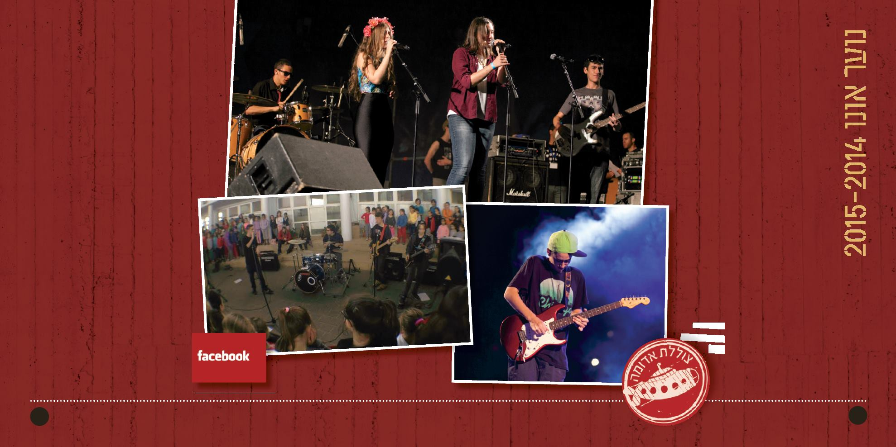

6
צוות הצוללנים
אריאל סיסו
רכז :
קבוצת נוער חברתית התנדבותית אשר
לוקחת חלק משמעותי בתפעול מרכז
המוסיקה. הקבוצה אחראית לתפעול השוטף
של המקום ברמה הטכנית )הגברה ועריכת
קול(, הפקת אירועים מוסיקליים שונים,
שיווק ופרסום.
גילאי יעד: ז'–י״ב
ישיבת צוות מתקיימת אחת לשבוע
בימי חמישי.
בית הספר לנגינה
רח׳ המעפילים 4, קריית אונו
טל: 4500536-30
כנרת רוזנברג
רכזת:
שיעורי נגינה פרטיים בכלים הבאים:
גיטרה חשמלית / גיטרה קלאסית /
קלידים / גיטרה בס / תופים / פיתוח
קול
בית הספר לנגינה של הצוללת האדומה
מעניק סביבה מוסיקלית חברתית למוסיקאים
צעירים ששאיפתם היא לנגן, ליצור ולהתפתח
בתחומי המוסיקה וכמובן להתחבר ולשתף
פעולה עם בני נוער בעלי תחום עניין דומה.
במסגרת בית הספר לנגינה מועברים שיעורי
נגינה פרטיים באופן המותאם לרמתו האישית
של כל תלמיד ובהתאם לסגנון המוסיקלי
האהוב עליו.
הצוללת האדומה היא הבית של
המוסיקאים והלהקות הצעירות בקריית
אונו. המקום מקדם ותומך במוסיקאים
הצעירים בעיר ומאפשר להם ליהנות
מחדר החזרות, אולפן ההקלטות,
סדנאות העשרה, כיתות אומן, ערבי
במה פתוחה והזדמנויות רבות להופעות
באירועים העירוניים. את מרכז
המוסיקה מובילה קבוצת בני נוער אשר
לוקחת חלק משמעותי בתפעולו של
המקום.
מרכז המוסיקה הצוללת האדומה הפך
עם השנים למוסד חשוב ולבית חם
עבור מוסיקאים ויוצרים צעירים בעיר,
והוא מהווה מודל לחיקוי עבור
יישובים אחרים בארץ.
הצוללת
האדומה
מרכז המוסיקה
אריאל סיסו
מנהל :
:
אתר
חדר החזרות ואולפן הקלטות:
רח׳ הרצל 21, קריית אונו, 4032536-30
7
6
מחלקת הנוער / טל: 5311003-450
חפשואותנו
ב-
צוללת אדומה
ד
ם
י
ים
מ